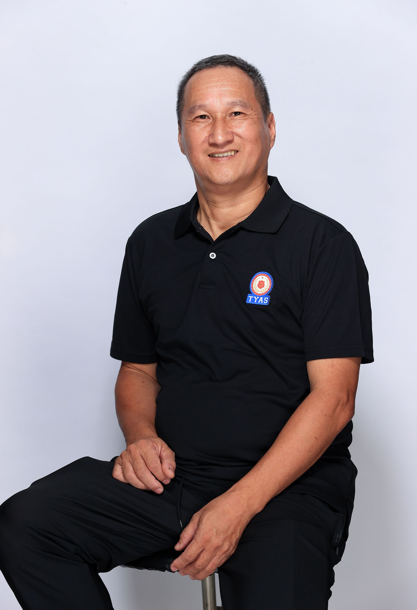

Leadership
Jessica Hung
M: jhung@tyas.tyc.edu.tw
Meina Tseng
M: mtseng@tyas.tyc.edu.tw
Meina brings an extensive linguistic background to her role, with degrees in Applied Chinese, English, and Japanese, as well as a certificate in Teaching Chinese as a Foreign Language. In her capacity as the Principal's Project Coordinator, she manages institutional recruitment and parent relations alongside her ongoing commitment to student support and development.

Sandy Chen
M: finance@tyas.tyc.edu.tw
School Office
Adam Hsieh
M: ahsieh@tyas.tyc.edu.tw
Adam graduated from Shih Hsin University with a degree in Journalism. He joins the General Affairs team with experience in administrative operations and facility management. He will help maintain the school's daily operations and provide support across departments.

Michelle Yeon
M: myeon@tyas.tyc.edu.tw
Sun Liu
M: academicaffairs@tyas.tyc.edu.tw
Having been involved in educational work since high school, Mr. Sun developed a deep interest in supporting student learning. With a Bachelor's degree in Foreign Languages & Literature, he channels his enthusiasm for language learning into his professional role, bringing both linguistic and educational insight to his work. He believes that education opens doors to endless possibilities.
In his free time, Sun enjoys traveling to new destinations, exploring different cultures, and loves spending time with his cats.

Kathy Lin
M: kalin@tyas.tyc.edu.tw
She enjoys helping others solve problems, and it brings her a great sense of fulfillment to see teachers and students being able to teach and learn with peace of mind because they feel supported.
She firmly believes that TYAS is everyone’s second home, and that every teacher and student is an irreplaceable part of this family.
Kathy also looks forward to working together with everyone at Taoyuan American School to continue building a warm and welcoming learning environment.

Joyce Tseng
M: finance@tyas.tyc.edu.tw
Joyce is responsible for issuing student invoices and receipts at TYAS. After graduating with a degree in Finance from National Chengchi University (NCCU), she gained experience working as a sales representative in an IT integrated company and also served as an administrative staff member at the NCCU Foreign Language Center. Her personal interests include choral singing and volleyball. In her professional role, she is skilled at integrating relevant information to facilitate smooth communication and collaboration among colleagues. She encourages students at TYAS to explore a variety of opportunities, discover their personal strengths and develop the ability to work collaboratively with others.
Jessie Yin
M: jyin@tyas.tyc.edu.tw
With a bachelor's degree in French from Tamkang University, Jessie brings several years of experience in educational administration, teaching management, parent relations, and event coordination. During her time in Canada, she completed self-directed digital marketing certification courses, further broadening her global perspective.
Adventurous, open-minded, and passionate, Jessie enjoys traveling and cooking. She believes that exploring new cultures and sharing experiences foster meaningful connections and lifelong learning.
Campus Services
Tony Hsieh
M: ga@tyas.tyc.edu.tw
Tony is from Nantou, Taiwan, and is a Capricorn who loves arts and crafts. He is a retired professional soldier who served as Director of the Army Joint Military Brigade and held other positions. He currently serves as a guard at the school.

Leo Lee
M: llee@tyas.tyc.edu.tw
Leo has experience in transportation services and will help ensure a safe and secure environment for our students, staff, and visitors while supporting the school's transportation needs.

Chloris Wu
M: nurse@tyas.tyc.edu.tw
Chloris is a pediatric nurse with 20 years of formal registration and experience. Over the past two decades, aside from completing a Bachelor's degree in Child Development and Family Studies at Shih Chien University, pursuing a Master's program in Early Intervention at Chang Gung University, spending time in the UK to broaden her international perspective through a working holiday, and experiencing parenthood firsthand, she has spent over 13 years working in pediatric-related fields. Healthcare requires continuous learning, and transitioning from clinical care to family-centered services has posed a completely new set of challenges. In her family services work, she has gained experience with children from preconception through adolescence. The more she learns, the better she understands the challenges children face throughout their developmental stages. Currently, she works as a school nurse at TYAS, providing comprehensive health care and nutrition services for children in the school setting. She hopes to apply the knowledge and experience she has accumulated over the past 20 years to protect children's physical health and support their overall growth and development.